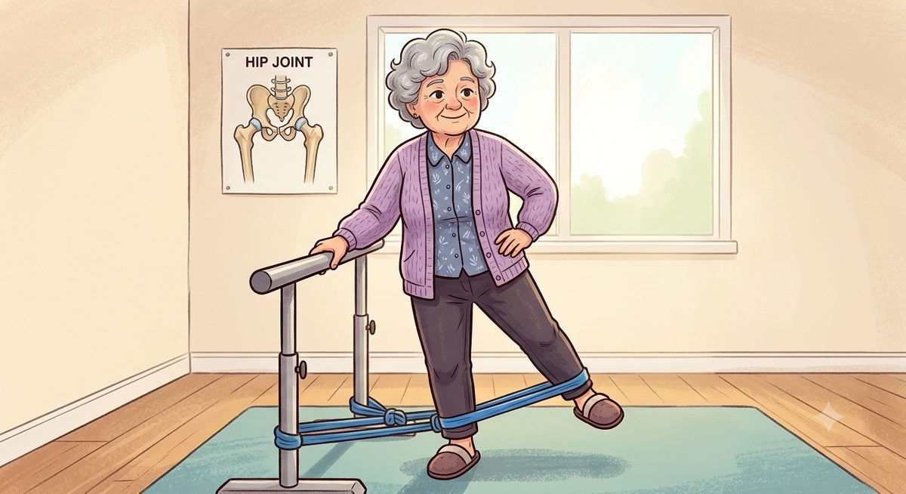

Início › Como aliviar a dor da artrose no quadril
Alívio da dorArtrose no quadril: como aliviar a dor
O que realmente funciona, o que funciona menos do que prometem e o que só custa dinheiro. Este guia reúne o que dizem as melhores revisões científicas disponíveis sobre o tratamento da dor da coxartrose, incluindo a revisão Cochrane publicada em 2026, para você chegar informado à consulta e saber o que fazer enquanto isso.
Revisado em 16 de agosto de 2026
O que fazer quando a dor aperta
Se você chegou aqui em um dia ruim, comece por estas medidas simples, que não dependem de consulta nem de receita:
- Não pare completamente. Reduza a atividade que disparou a dor, mas continue se movendo. O repouso absoluto enfraquece a musculatura que sustenta o quadril e costuma cobrar caro nos dias seguintes.
- Alterne posições. Ficar mais de 30 a 45 minutos na mesma posição, sentado ou em pé, enrijece a articulação. Levante, dê alguns passos, volte.
- Use calor antes de se mover (bolsa térmica por 15 a 20 minutos) para soltar a rigidez, e gelo depois do esforço se a região ficar quente ou incomodada.
- Apoie o quadril. Uma bengala do lado oposto tira carga real da articulação e costuma dar alívio imediato ao caminhar.
- Analgesia conforme orientação médica. Se você já tem uma medicação prescrita para as crises, é o momento de usá-la corretamente, e não de aguentar até o limite.
- Ajuste a noite. Durma sobre o lado que não dói, com travesseiro entre os joelhos.
Isso resolve o dia. O que muda a trajetória da doença nos próximos meses é o que vem a seguir.
Exercício: o que a ciência realmente mostra
O exercício é o tratamento de primeira linha para a coxartrose em todas as diretrizes internacionais. Vale, porém, apresentar os números com honestidade, porque eles são mais modestos do que a maioria dos sites sugere.
A revisão Cochrane sobre exercício para artrose do quadril, atualizada em 2026, reuniu 18 estudos randomizados com 1.368 participantes. Comparado a não fazer nada ou ao cuidado habitual, o exercício provavelmente reduz a dor e melhora a função de forma leve: cerca de 7 pontos em uma escala de 0 a 100 para dor e 9 pontos para função. O detalhe importante é que os autores usaram como limiar de diferença clinicamente relevante 12 pontos para dor e 13 para função. Ou seja, na média dos estudos, o ganho ficou abaixo do que se considera perceptível no dia a dia.
Uma metanálise cumulativa publicada em 2023, com outros 18 estudos, chegou a conclusão semelhante: há benefício consistente do exercício sobre dor e função, mas de tamanho pequeno, sem que se possa afirmar com segurança que ele cruza o limiar de relevância clínica. Os autores calcularam que só um novo estudo com quase 75 mil participantes mudaria essa conclusão, e por isso recomendaram parar de repetir a mesma pergunta e passar a investigar quem se beneficia mais e de que tipo de exercício.
Então não vale a pena se exercitar?
Vale, e por bons motivos. Primeiro, esses números são médias: dentro delas há quem melhore muito e quem não melhore nada, e você pode ser do primeiro grupo. Segundo, o exercício é seguro e barato — nos estudos, cerca de 2 em cada 100 pessoas tiveram algum efeito indesejado, quase sempre dor muscular leve e passageira, e quando o exercício foi somado a outro tratamento ele até reduziu ligeiramente os eventos adversos. Terceiro, ele age sobre o resto da saúde: pressão, glicemia, peso, sono, humor e risco de queda, que não aparecem em uma escala de dor no quadril. Nenhuma outra medida conservadora oferece esse pacote.

Qual tipo de exercício é melhor para artrose no quadril
Essa é a pergunta que mais importa na prática, e a resposta da melhor evidência disponível é surpreendente: não há um vencedor. A revisão Cochrane de 2026 comparou separadamente programas de musculação e exercício neuromuscular, exercício aeróbico, práticas corpo e mente (como ioga e tai chi) e programas mistos. Em nenhuma das análises houve diferença entre os tipos de exercício quanto a dor, função ou qualidade de vida.
Alguns estudos individuais sugerem vantagens pontuais. Um ensaio dinamarquês encontrou melhora de função superior com caminhada nórdica (aquela feita com bastões) em relação a musculação e a exercícios domiciliares. Mas são achados isolados, que não se sustentaram quando todos os estudos foram somados.
A consequência prática é libertadora: o melhor exercício para o seu quadril é aquele que você consegue manter. Se você odeia academia mas ama nadar, nade. Se caminhar no fim da tarde é o que cabe na sua rotina, caminhe. A adesão ao longo de meses importa mais do que a escolha da modalidade.
Algumas opções que costumam funcionar bem no quadril artrósico:
- Musculação orientada, com foco em glúteos, quadríceps e core, que sustentam a articulação;
- Bicicleta (ergométrica ou de rua), que move a articulação sem impacto;
- Natação e hidroginástica, boas opções para quem tem muita dor ao apoiar o peso;
- Caminhada em terreno regular, com aumento gradual de distância;
- Ioga, tai chi e pilates, que combinam mobilidade, equilíbrio e força.
Quanto e com que frequência
Nos estudos incluídos na revisão Cochrane, os programas mais comuns tinham 2 a 3 sessões por semana, de 30 a 60 minutos, por 8 a 12 semanas, a maioria com supervisão de fisioterapeuta pelo menos no início. Esse é um bom parâmetro para conversar com o seu profissional.
A regra da noite
É normal sentir dor leve e cansaço no começo de um programa de exercícios, e isso não significa que você esteja danificando a articulação. O sinal confiável de que passou do ponto é outro: se a dor passar a atrapalhar o sono por alguns dias seguidos, você fez demais. Nesse caso, descanse dois dias e retome com carga menor, aumentando mais devagar.
Peso: o tratamento mais subestimado
Cada passo transmite ao quadril várias vezes o peso do corpo. Isso faz do controle de peso uma das intervenções de maior efeito prático na coxartrose, embora seja também a mais difícil, porque a própria dor atrapalha a atividade física e a perda de peso. Não existe um número mágico: reduções modestas e sustentadas já aliviam carga, e a combinação de ajuste alimentar com exercício funciona melhor do que qualquer um dos dois isolado. Se esse é o seu ponto difícil, vale pedir ajuda formal, com nutricionista e acompanhamento, em vez de tentar de novo sozinho.
Bengala: de que lado usar
A bengala é subutilizada por vaidade, e é pena, porque ela funciona. Usada corretamente, tira carga real da articulação doente, melhora o equilíbrio, reduz o risco de queda e ainda sinaliza às pessoas ao redor que você precisa de mais espaço e mais tempo.
A regra é simples e quase sempre invertida por quem começa: a bengala vai na mão do lado oposto ao quadril que dói. Se o quadril direito é o problema, a bengala fica na mão esquerda, e avança junto com a perna direita. A altura correta deixa o punho da bengala na altura do osso do quadril, com o cotovelo levemente dobrado.
Como dormir com dor no quadril
A dor noturna é uma das queixas que mais desgastam quem tem coxartrose, porque tira o sono e o sono ruim aumenta a percepção de dor no dia seguinte. Algumas medidas ajudam:
- durma de lado sobre o quadril que não dói, com um travesseiro firme entre os joelhos, mantendo a perna de cima alinhada e não caindo para dentro;
- ou de barriga para cima, com um travesseiro sob os joelhos, para tirar a tensão da frente do quadril;
- evite dormir diretamente sobre o lado doente, e evite colchões muito moles, que deixam a bacia afundar e desalinhar;
- faça um alongamento leve e um banho quente antes de deitar, para reduzir a rigidez inicial;
- evite a última xícara de café e as telas na hora de dormir: o sono fragmentado piora a dor.
Um alerta importante: dor que acorda a pessoa todas as noites, ou que existe mesmo em repouso, costuma indicar doença mais avançada. Não é um detalhe de conforto, é uma informação clínica relevante e deve ser levada à consulta.
Calor ou gelo?
A evidência científica aqui é fraca para os dois lados, o que significa, na prática, que você pode usar o que funcionar melhor no seu caso, sem medo de errar. A orientação usual é calor para rigidez, especialmente de manhã e antes de se movimentar, porque relaxa a musculatura e melhora a mobilidade; e gelo para a articulação irritada, depois de um esforço maior ou em um período de crise. Vinte minutos por vez, com uma barreira de pano na pele, é a regra de segurança em ambos.
Remédios: o que eles entregam e o que cobram
Nenhum remédio deve ser iniciado por conta própria, e esta seção não substitui a prescrição. Ela existe para que você entenda a lógica da conversa com o seu médico. Os números abaixo vêm de um material de decisão compartilhada produzido pelo serviço público de saúde britânico com o Winton Centre e a British Hip Society, e mostram quantas pessoas em cada 100 relataram melhora significativa da dor:
Alguns pontos que costumam surpreender:
- Anti-inflamatórios são eficazes na artrose, e é por isso que são tão usados. O problema é o preço biológico: sangramento digestivo, dano renal e aumento de risco cardiovascular, tanto maiores quanto maior a dose e o tempo de uso. Por isso a regra é a menor dose eficaz, pelo menor tempo possível, muitas vezes com proteção gástrica, e com cautela redobrada em quem tem doença renal ou cardíaca.
- Opioides fracos, como a codeína, aliviam em proporção parecida com o exercício, mas com 60 a 70 em cada 100 pessoas relatando efeitos gastrointestinais, além do risco de dependência. Ficam reservados a quem não pode usar anti-inflamatórios. Opioides fortes não são recomendados para artrose.
- Paracetamol isolado tem evidência fraca de benefício na artrose e não é mais considerado uma boa escolha de base, embora siga útil em situações específicas.
- Repare que o placebo alivia entre 21 e 47 em cada 100 pessoas nesses estudos. Não é fraude nem imaginação: é a medida de quanto expectativa, atenção e tempo influenciam a dor. E é também a razão pela qual tantos tratamentos sem efeito real parecem funcionar por algumas semanas.
Infiltração de corticoide
A infiltração com corticoide pode ajudar em casos de dor intensa e prolongada, com alívio que costuma durar até cerca de três meses. No quadril, ela é feita com anestesia local e guiada por imagem, porque a articulação é profunda e não permite injeção às cegas com segurança. Os riscos são pequenos, mas existem: dor no local, sangramento e, raramente, infecção. É uma ferramenta de ponte, útil para atravessar uma fase ruim ou para ganhar tempo até uma decisão, e não um tratamento de manutenção.
O que não tem evidência (e você não precisa pagar)
Esta talvez seja a seção mais útil da página, porque protege o seu bolso. Segundo as melhores revisões disponíveis, não há boa evidência de que os itens abaixo aliviem a dor da artrose do quadril:
- Glucosamina e condroitina. Muito vendidas, sem benefício demonstrado na artrose.
- Ácido hialurônico injetável. No quadril especificamente, as revisões indicam que não funciona.
- Plasma rico em plaquetas e terapias com células-tronco. Caros, populares nas redes sociais, sem boa evidência de benefício na dor da artrose. Desconfie de qualquer promessa de regeneração de cartilagem.
- Eletroterapias, como o TENS. Sem evidência de benefício, embora também sem evidência de dano.
- Acupuntura. Sem boa evidência específica para artrose do quadril.
- Palmilhas e calçados especiais. Sem evidência de benefício para a coxartrose.
Um detalhe honesto: nenhum desses itens é perigoso, e algumas pessoas relatam melhora com eles. Parte disso é o efeito placebo, que é real e não deve ser desprezado. O problema aparece quando eles substituem o que funciona ou consomem um orçamento que faria diferença em três meses de fisioterapia.
Terapias manuais, feitas por fisioterapeuta, são a exceção parcial da lista: elas podem ajudar na dor quando combinadas com exercício, e não como tratamento isolado.
Colágeno funciona para artrose no quadril?
É uma das perguntas mais frequentes no consultório, e merece uma resposta direta: não há evidência de qualidade que sustente o colágeno como tratamento da artrose do quadril.
Os motivos são três. Primeiro, quase toda a pesquisa disponível é sobre o joelho, não sobre o quadril, e as duas articulações não se comportam da mesma forma. Segundo, os estudos que sugerem algum benefício costumam ser pequenos, de curta duração e financiados por fabricantes, uma combinação que infla resultados positivos. Terceiro, e mais importante: quando os resultados são reunidos e avaliados criticamente, o efeito é pequeno e de baixa certeza, motivo pelo qual as principais diretrizes internacionais de artrose não recomendam suplementos, incluindo colágeno, glucosamina e condroitina.
Há ainda um mal-entendido conceitual que vale desfazer. Colágeno ingerido não é absorvido e depositado na cartilagem do quadril como se fosse massa corrida em uma parede. Ele é digerido em aminoácidos e peptídeos, distribuídos por todo o corpo conforme a necessidade. Nenhum suplemento oral regenera cartilagem já desgastada.
Isso significa que tomar colágeno é errado? Não necessariamente. É um suplemento seguro, e quem consome proteína insuficiente pode se beneficiar do aporte proteico em si, principalmente na terceira idade. O que não se justifica é gastar com ele esperando que resolva a artrose, ou usá-lo no lugar do exercício, do controle de peso e da avaliação médica. Se você quiser experimentar, mantenha o resto do tratamento e avalie honestamente em dois a três meses se houve diferença real.
O que evitar no dia a dia
- Repouso prolongado. É o erro mais comum e o mais caro: alivia hoje e piora em duas semanas.
- Picos bruscos de atividade. Passar de sedentário a uma caminhada de dez quilômetros no domingo garante uma segunda-feira ruim. A progressão precisa ser gradual.
- Impacto repetitivo em piso duro, como corrida em asfalto e saltos, quando já há dor com o uso.
- Assentos muito baixos e sofás fundos, que forçam flexão extrema do quadril e dificultam levantar. Prefira cadeiras firmes, com apoio de braço.
- Ficar sentado por horas. A rigidez ao levantar depois de longos períodos sentado é um dos sintomas mais característicos da coxartrose.
- Automedicação contínua com anti-inflamatórios. Usar por conta própria, todos os dias, por meses, é uma das formas mais comuns de dano renal evitável.
Quando procurar o médico
Sinais que pedem avaliação
- dor no quadril após queda ou trauma, principalmente com dificuldade de apoiar o peso na perna;
- febre associada à dor, com vermelhidão ou calor na região;
- dor noturna constante, progressiva, especialmente com perda de peso não explicada;
- perda de força, dormência ou formigamento na perna;
- dor que deixou de responder às medidas habituais e passou a limitar trabalho, sono e vida diária.
Esse último item merece uma palavra final. Cerca de 9 em cada 10 pessoas com artrose de quadril conseguem conviver com a doença sem cirurgia na primeira década após o diagnóstico. Mas quando o tratamento conservador se esgota, a prótese passa a ser a opção com melhor resultado disponível: um ensaio clínico publicado em 2024 comparou diretamente a cirurgia com um programa de fortalecimento em pacientes com coxartrose grave e encontrou alívio de dor e ganho funcional claramente superiores com a prótese. Reconhecer esse momento não é desistir do tratamento conservador, é usar a ferramenta certa na hora certa.
Para seguir: entenda o que é a coxartrose, seus sintomas e graus, veja como funciona a prótese de quadril e, se essa for a sua dúvida atual, quanto custa a cirurgia no Brasil.
Perguntas frequentes
Dúvidas sobre aliviar a dor da artrose no quadril
Como aliviar a dor da artrose no quadril?
As medidas com melhor respaldo são exercício regular orientado, controle do peso, bengala do lado oposto ao quadril doente e medicação conforme orientação médica. Calor antes de se movimentar e gelo após o esforço ajudam algumas pessoas. Repouso total não é recomendado: enfraquece a musculatura e piora a dor com o tempo.
Qual o melhor exercício para artrose no quadril?
Não existe um exercício comprovadamente superior. A revisão Cochrane de 2026 comparou musculação, exercício aeróbico, caminhada, ioga e tai chi e não encontrou diferença entre eles. Na prática, o melhor exercício é o que você consegue manter, feito 2 a 3 vezes por semana, de preferência com orientação profissional no início.
Colágeno funciona para artrose no quadril?
Não há evidência de boa qualidade que sustente o colágeno no tratamento da artrose do quadril. Os estudos são principalmente sobre o joelho, pequenos e frequentemente financiados por fabricantes, e as diretrizes internacionais não recomendam suplementos. Nenhum suplemento oral regenera cartilagem desgastada.
Pode caminhar com artrose no quadril?
Sim, e costuma fazer bem. O que se ajusta é a dose e o terreno: piso regular, ritmo confortável, aumento gradual. Desconforto leve durante e após é esperado; o sinal de excesso é a dor atrapalhar o sono por alguns dias seguidos.
Como dormir com dor no quadril?
De lado sobre o quadril que não dói, com travesseiro entre os joelhos, ou de barriga para cima com travesseiro sob os joelhos. Evite dormir sobre o lado doente e colchões muito moles. Dor que acorda todas as noites indica doença mais avançada e merece avaliação.
Infiltração no quadril resolve?
A infiltração de corticoide alivia cerca de metade dos pacientes, por até aproximadamente três meses. No quadril ela precisa ser guiada por imagem. É uma ponte para atravessar uma fase ruim, não um tratamento de manutenção.
Em resumo
- Exercício é o tratamento de primeira linha: efeito médio modesto sobre a dor, mas seguro, barato e bom para o resto da saúde.
- Nenhum tipo de exercício se mostrou superior aos outros; o melhor é o que você mantém, 2 a 3 vezes por semana.
- Controle de peso e bengala do lado oposto são medidas simples com efeito real sobre a carga do quadril.
- Anti-inflamatórios funcionam, mas têm custo biológico; devem ser usados na menor dose e pelo menor tempo, com orientação médica.
- Glucosamina, condroitina, colágeno, ácido hialurônico no quadril, plasma rico em plaquetas, TENS, acupuntura e palmilhas não têm boa evidência.
- Dor noturna constante e dor que limita a vida diária são sinais de que é hora de reavaliar o tratamento com o ortopedista.
Referências
- Hall M, Lawford BJ, Hinman RS, Dobson F, Spiers L, Kimp A, French HP, Reichenbach S, Hernandez-Molina G, Bennell KL. Exercise for osteoarthritis of the hip. Cochrane Database of Systematic Reviews. 2026, Issue 7. Art. No.: CD007912.
- Teirlinck CH, Verhagen AP, van Ravesteyn LM, Reijneveld-van de Vendel EAE, Runhaar J, van Middelkoop M, Ferreira ML, Bierma-Zeinstra SMA. Effect of exercise therapy in patients with hip osteoarthritis: a systematic review and cumulative meta-analysis. Osteoarthritis and Cartilage Open. 2023;5(1):100338.
- NHS England, Versus Arthritis, Winton Centre for Risk and Evidence Communication, British Orthopaedic Association, British Hip Society, Chartered Society of Physiotherapy. Making a decision about hip osteoarthritis (decision aid). Julho de 2022, v1.1.
- Bannuru RR, et al. OARSI guidelines for the non-surgical management of knee, hip, and polyarticular osteoarthritis. Osteoarthritis and Cartilage. 2019;27(11):1578-89.
- Moseng T, et al. EULAR recommendations for the non-pharmacological core management of hip and knee osteoarthritis: 2023 update. Annals of the Rheumatic Diseases. 2024;83(6):730-40.
- Bieler T, et al. In hip osteoarthritis, Nordic Walking is superior to strength training and home-based exercise for improving function. Scandinavian Journal of Medicine and Science in Sports. 2017;27(8):873-86.
- Frydendal T, et al. Total hip replacement or resistance training for severe hip osteoarthritis. New England Journal of Medicine. 2024;391:1610-20.
Cirurgiões de quadril em Curitiba
Procurando um cirurgião de quadril?
Este site é informativo e mantém, gratuitamente, um espaço de indicação de cirurgiões de quadril em Curitiba. É um profissional que cuida da articulação e quer aparecer aqui? Escreva para curitibaquadril@gmail.com.
Prefere abrir direto? Escrever pelo Gmail ou usar o app de e-mail.
Indicação gratuita e sem fins comerciais. Cada profissional é responsável pela própria publicidade perante o CFM.